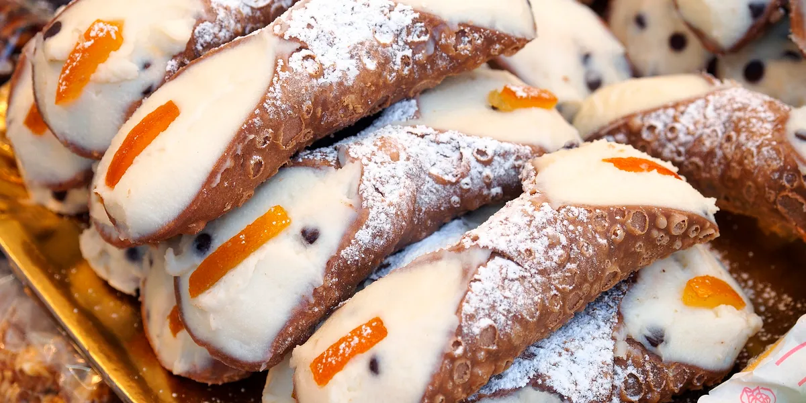

First, combine the dry ingredients and mix them in a food processor. Then add the pebbles and pulse until it looks like small pebbles. Next, add the egg and cold wine and then pulse until the dough barely begins to hold together. Then, knead the dough on a floured surface until dough is smooth. Next, wrap in plastic and chill for 1 hour. Next, roll out the dough to ⅛ inch thick and cut into 4-inch round circles. Pull each circle into a 5-inch circle. Next, place the egg white in a bowl and set it aside. Then, heat the oil in a pan to 350 degrees. Wrap one oval of dough loosely lengthwise around a cannoli form or 1-inch-diameter wooden dowel or cannoli form. Next, brush one end of the dough with egg white, then pull the dry end over the top and press down to seal. Now using tongs, lower the dough into the oil and fry for about 2-3 minutes. Remove the shells with the tongs and transfer them to the paper towel-lined plate to cool. When the shells are cool enough to touch, remove the molds and repeat with the remaining dough in batches until all shells have been fried. Finally, dip ends of cooled shells in melted chocolate, and cool until dry.
back to home page The copyright © 2023